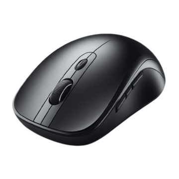

About Wireless Mouse Y1
Wireless Mouse Y1 is a high-performance wireless mouse designed to provide precision, comfort, and seamless connectivity for everyday computing and professional work. Featuring advanced 2.4GHz wireless technology and Bluetooth multi-device connectivity, the mouse delivers responsive performance comparable to a wired mouse while offering the convenience of a cable-free workspace.
The mouse supports effortless switching between multiple connected devices, making it ideal for users who work across desktop computers, laptops, and tablets. Its ergonomic design promotes user comfort during extended use, while the high-precision optical sensor enables accurate cursor control across a wide range of surfaces.
With a battery life of up to 200 hours under normal operating conditions, Wireless Mouse Y1 minimizes interruptions and helps users remain productive throughout the day.
Suitable for office work, creative applications, study, and general computing, Wireless Mouse Y1 combines reliability, efficiency, and comfort in a modern wireless design.

Product Information
Wireless Mouse Y1 provides zero-lag 2.4GHz connectivity, Bluetooth multi-device connectivity, high precision optical tracking and extended battery life of up to 200 hours. The device supports USB RF receiver connectivity and is designed for reliable wireless productivity.
Suitable for office work, creative applications, study, and general computing. The mouse is designed for desktop computers, laptops, and tablets and supports seamless switching between multiple connected devices.
5 years from the manufacturing date under normal usage and storage conditions
Store at room temperature in a clean, dry environment. Keep relative humidity below 90% to prevent corrosion of electronic components. Avoid direct sunlight, excessive heat, strong magnetic fields, and exposure to liquids. Remove batteries if the product is not used for an extended period.